In this document we discuss the solution of a standard fluid-structure interaction problem – finite-Reynolds-number flow in a 2D collapsible channel. We shall demonstrate that the driver code for this multi-physics problem is a straightforward combination of the driver codes for the two corresponding single-physics problems discussed earlier:
- Flow in a 2D channel with prescribed wall motion:
In this single-physics problem, we represented the moving wall by aGeomObject, and created aDomainobject to provide
an analytical representation of the domain boundary. We discretised the Navier-Stokes equations with 2D Crouzeix-Raviart elements and updated their nodal positions (in response to the prescribed changes in the wall position) by theirMacroElementrepresentation.
and
- The deformation of a pressure-loaded elastic beam:
In this single-physics problem, we discretised the elastic beam withHermiteBeamElementsand computed its deformation (determined by the positional degrees of freedom, stored at theHermiteBeamElement'sSolidNodes) in response to the prescribed pressure load.
The problem
The figure below shows a sketch of the problem: Flow is driven by a prescribed pressure drop through a 2D channel of width 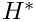 and total length 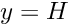 The upstream and downstream lengths of the channel are rigid, whereas the upper wall in the central section is an elastic membrane whose shape is parametrised by a Lagrangian coordinate, 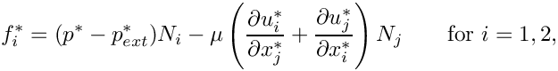
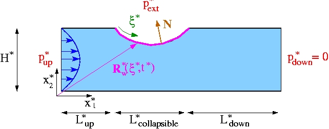
Sketch of the problem. We scale all lengths on the channel width, , use the average velocity through the undeformed channel, 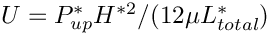 , to scale the velocities, and use 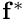 to non-dimensionalise time. Finally, the fluid pressure is non-dimensionalised on the viscous scale With this non-dimensionalisation, the Navier-Stokes equations have the same form as in the earlier example with prescribed wall motion: 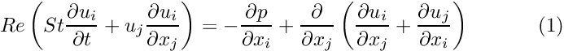 and 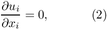 with 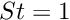. As before, the flow is subject to the following boundary and initial conditions:
We model the elastic membrane as a thin-walled elastic Kirchhoff-Love beam of wall thickness 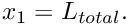 , subject to an axial (2nd Piola-Kirchhoff) pre-stress 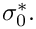 The beam' effective (1D) elastic modulus is given by 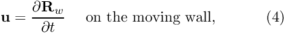 where 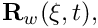 and 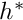 are its 3D Young's modulus and Poisson's ratio, respectively. The beam's deformation is governed by the principle of virtual displacements, discussed in detail elsewhere. As in the Navier-Stokes equations, we scale all lengths in the beam problem on the channel's width, 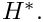 The non-dimensional position vector 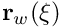 to the undeformed wall is then given by 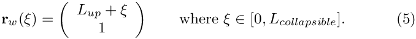 Our non-dimensionalisation of the principle of virtual displacements requires all stresses and tractions to be non-dimensionalised on the beam's (effective 1D) elastic modulus, 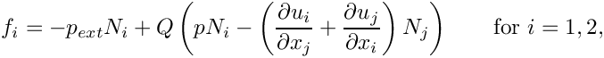 where 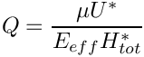 is the ratio of the fluid pressure scale, 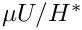 , used to non-dimensionalise the Navier-Stokes equations, to the beam's effective elastic modulus, |
 , so that the position vector to the moving wall is given by 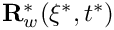 . The wall is loaded by the external pressure
, so that the position vector to the moving wall is given by 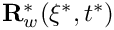 . The wall is loaded by the external pressure  and by the traction that the viscous fluid exerts on it. The components of the load vector 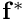 that acts on the wall are therefore given by
and by the traction that the viscous fluid exerts on it. The components of the load vector 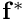 that acts on the wall are therefore given by  . (As usual, asterisks distinguish dimensional parameters from their non-dimensional equivalents.)
. (As usual, asterisks distinguish dimensional parameters from their non-dimensional equivalents.) .
. at 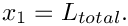
at 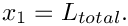 , therefore we define the non-dimensional external pressure as 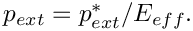 The non-dimensional load vector 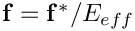 that acts on the wall is then given by
, therefore we define the non-dimensional external pressure as 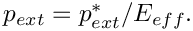 The non-dimensional load vector 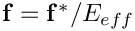 that acts on the wall is then given by Results
The figure below shows a snapshot of the flow field, taken from the animation of the computational results. The first four figures show (from top left to bottom right) "carpet plots" of the axial and transverse velocities, the axial component of the perturbation velocity 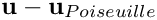 , and the pressure distribution. The 2D contour plot at the bottom of the figure shows a contour plot of the pressure and a few instantaneous streamlines.
The overall structure of the flow field is very similar to that observed in the corresponding
problem with prescribed wall motion: The wall oscillation generates a large-amplitude sloshing flow that is superimposed on the pressure-driven Poiseuille flow. At the instant shown in this figure, the wall is moving inwards. Consequently, the sloshing flow generated in the upstream (downstream) rigid sections is directed against (in the same)
direction as that of the pressure-driven mean flow.
In the present problem, the wall motion is, of course, not prescribed but determined as part of the overall solution. Jensen & Heil's (2003) asymptotic analysis of the problem shows that the period of the oscillations is determined by the balance between fluid inertia and the elastic restoring forces. In certain parameter regimes (at sufficiently large Reynolds number), the wall can extract energy from the pressure-driven mean flow, causing the oscillations to grow in amplitude. In the present example, the Reynolds number is too small for this to happen and viscous dissipation causes the oscillations to decay, as shown in this plot.

Overview: How to solve fluid-structure interaction problems with oomph-lib
Before attempting to solve a fluid-structure interaction problem, we generally recommend to first study the constituent single-physics problems in isolation, i.e.
- Discretise the solid mechanics problem with a suitable
SolidFiniteElement(e.g. aHermiteBeamElement) and determine the wall deformation in response to a prescribed external load. If possible, choose a load that is vaguely "representative" of the loads expected in the actual fluid-structure interaction problem. - Discretise the fluid mechanics problem in a domain in which the deformation of the "elastic boundary" is described by a
GeomObjectthat performs a prescribed motion. Choose a suitable node-update strategy to adjust the position of the fluid nodes in response to the (prescribed) motion of the "elastic boundary". (As demonstrated in many previous examples, aDomain/MacroElement- based node-update method is very easy to implement.) If possible, try to impose a wall motion that is "representative" of the type of wall motion expected in the actual fluid-structure interaction problem.
Once the behaviour of the two isolated single-physics problems is sufficiently well understood (e.g. what spatial discretisations are required, etc.), combine the two single-physics problems to a fully-coupled problem. The coupling introduces two types of interactions that must be incorporated into the computational framework:
- The position of the nodes in the fluid mesh depends on the wall shape. Since the wall shape is now determined by the degrees of freedom in the
SolidFiniteElementsthat we use to discretise the wall, we must ensure that:- The node-update operations that we developed for problems with prescribed wall motion (in which the position of the curvilinear domain boundaries is determined by
GeomObjects) also work for problems in which the curvilinear domain boundaries are represented bySolidFiniteElements. - The dependence of the residuals of the fluid elements on the solid-mechanics degrees of freedom that affect the positions of the fluid nodes (via the node-update operation) are taken into account when computing the fluid elements' Jacobian matrices. (See the discussion of the "shape derivatives" in the "toy" free-boundary Poisson problem for details.)
- The node-update operations that we developed for problems with prescribed wall motion (in which the position of the curvilinear domain boundaries is determined by
- The
SolidFiniteElementsare not only loaded by the external load but also by the traction that the fluid exerts on them. When computing the residuals of theSolidFiniteElementswe have to evaluate the combined load vector at theSolidFiniteElement'sGauss points. We therefore have to provide a lookup scheme that specifies:- which fluid element is adjacent to a given Gauss point in the
SolidFiniteElements, and - which (fluid) degrees of freedom affect the fluid traction at that point.
SolidFiniteElementson these (fluid) degrees of freedom must be taken into account when computing theSolidFiniteElement'sJacobian matrix. - which fluid element is adjacent to a given Gauss point in the
oomph-lib provides a number of high-level functions that allow the required lookup schemes to be generated completely automatically. In the following sections we shall provide a brief discussion of the methodology but we stress that the details are not particularly important for the "user". If you just want to "use" oomph-lib's fluid-structure interaction capabilities and don't care too much about the technical details, you may wish to skip the next few sections and continue with the Overview of the driver code, where we demonstrate that, apart from a few trivial modifications, the driver code for the fully-coupled fluid-structure interaction problem is a straightforward combination of the two single-physics driver codes.
Brief discussion of the implementation
MacroElement-based (fluid-)node updates in FSI problems
The shape derivatives
When discussing our "toy" free-boundary Poisson problem we demonstrated how a "bulk" element's MacroElement - representation allows the efficient automatic evaluation of the "shape derivatives" – the derivatives of the "bulk" equations (here the Navier-Stokes equations) with respect to the Data values (here the nodal positions in the beam elements) that determine the shape of the domain boundary. The methodology discussed in the context of the "toy" problem may also be used for genuine fluid-structure interaction problems, such as the problem considered here, provided
- A
MacroElement/Domain- based Mesh is used to discretise the fluid domain. - The moving boundary is represented by a
GeomObjectwhose member functionGeomObject::geom_data_pt(...)provides access to its "geometric"Data, i.e. theDatathat affects its shape.
Condition 1 is satisfied as the CollapsibleChannelMesh used for the simulation of the single-physics fluids problem with prescribed wall motion employs the CollapsibleChannelDomain to perform the node update in response to changes in the domain boundary. Multiple inheritance may therefore be used to upgrade the existing CollapsibleChannelMesh to a mesh that is derived from the MacroElementNodeUpdateMesh base class. The dependence of the residuals of the "bulk" (fluid) elements on the geometric Data that affects its nodal positions is automatically taken into account if the "bulk" (fluid) elements (of type BULK_ELEMENT, say) are "upgraded" to the "wrapped" class MacroElementNodeUpdateElement<BULK_ELEMENT>. We refer to the discussion of the "toy" free-boundary Poisson problem for details of this methodology.
Representing the wall mesh as a GeomObject
What remains to be done is to represent the wall (discretised by the SolidFiniteElements contained in the wall mesh) as a GeomObject. For this purpose, oomph-lib provides the class
whose constructor takes a pointer to the Mesh that is to be represented as a GeomObject. The Lagrangian and Eulerian dimensions of the mesh are taken to be the dimension of elements and the dimension of the nodes, respectively. The conversion from Mesh into GeomObject only makes sense if the element is derived from a FiniteElement, itself a GeomObject, which has associated Lagrangian (local) and Eulerian coordinate systems. In our collapsible channel problem, the Lagrangian dimension is one because the wall is parametrised by a single intrinsic coordinate (the shape of the mesh's constituent elements is parametrised by a single local coordinate), and the Eulerian dimension is two because the nodes in the wall mesh have two Eulerian coordinates. Assuming that Wall_mesh_pt stores a pointer to the wall mesh, the code
creates a GeomObject representation of the wall mesh that allows us to obtain the position of a material point on the wall (parametrised by its Lagrangian coordinate 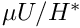) from the GeomObject::position(...) function. For instance, the following code computes the position vector  to the material point on the deformed wall, located at 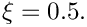
to the material point on the deformed wall, located at 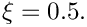
Here is a graphical illustration of the various representations of the domain boundary:
1. A "normal" GeomObject
In single-physics problems with prescribed boundary motion the domain boundary may be represented by a GeomObject. The GeomObject provides a parametrisation of its shape in terms of an intrinsic coordinate,  , as shown in this sketch:
, as shown in this sketch:
The function GeomObject::position(zeta,r) computes the position vector r to a point on the GeomObject, as identified by its intrinsic coordinate zeta.
2. A beam/shell structure
In beam/shell problems, the shape of the deformed structure is parametrised by its Lagrangian coordinate , 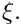
Beam/shell structures may therefore act as GeomObjects if we interpret their Lagrangian coordinate,  , as the
, as the GeomObject's intrinsic coordinate, .
3. A discretised beam/shell structure
In an oomph-lib computation, the beam/shell structure will, of course, have been discretised by a number of SolidFiniteElements. The MeshAsGeomObject discussed above, is therefore a "compound" GeomObject that contains a number of sub-objects – the mesh's constituent SolidFiniteElements. Within the "compound" GeomObject each sub-object acts as a GeomObject in its own right – the shape of a SolidFiniteElement is parametrised by its local coordinate s.
The MeshAsGeomObject::position(...) function therefore determines the position vector to the point labelled by the Lagrangian coordinate (i.e. the GeomObject's intrinsic coordinate, ) in a two-stage process: First it determines which of its constituent SolidFiniteElements "contains" the relevant material point (This is possible because the function SolidFiniteElement::interpolated_xi(...) provides access to the Lagrangian coordinate inside the element) and then uses the SolidFiniteElement::interpolated_x(...) function to determine the Eulerian coordinates of that point.
Applying the fluid-traction to the wall elements: FSIWallElements
Next, we shall discuss how the fluid traction is added to the load terms in the wall equations. As mentioned above, the computation of the residuals of the wall equations requires the evaluation of the combined load vector at the Gauss points in the wall elements. Furthermore, the dependence of the residuals on those (fluid) degrees of freedom that affect the traction must be taken into account when computing the wall element's Jacobian matrix. Storage for the various lookup schemes required for such computations is provided in the virtual base class FSIWallElement whose inheritance structure is as follows:
The FiniteElement class inherits from GeomObject and by default the GeomObject::position(...) function calls the function FiniteElement::interpolate_x(..); in other words, the element's local coordinate is regarded as the intrinsic coordinate that parametrises its shape. Thus we already have a standard interface through which an FSIWallElement can be used to parametrise the shape of (part of) the domain boundary.
By inheriting from the SolidFiniteElement class, we establish that the shape of the FSIWallElement is determined by the positional Data stored at its constituent SolidNodes. Recall that this information is required during the computation of the shape derivatives of the fluid equations.
The ElementWithExternalElement class provides the generic storage and helper functions required to keep track of the external elements that are adjacent to Gauss points in any FiniteElement, see also the tutorial on Boussinesq convection with a multi-domain approach. In the FSIWallElement, it is the fluid elements that load the structure which are adjacent to the Gauss points. The various lookup schemes required to determine these fluid elements may be generated completely automatically by the helper function
which is defined in the namespace FSI_functions. The template parameters FLUID_ELEMENT and DIM_FLUID specify the type of the fluid element and its spatial (Eulerian) dimension, respectively. The arguments are the pointer to the problem, the number of the boundary in the fluid mesh adjacent to the elastic wall, and the pointers to the fluid and wall meshes. The function assumes that boundary coordinates have been set for the fluid nodes on the mesh boundary specified by the argument boundary_in_fluid_mesh, and that these boundary coordinates are consistent with the parametrisation of the wall mesh by its Lagrangian coordinate. (See the discussion of the mesh generation procedures for domains with curvilinear boundaries for a more detailed discussion of boundary coordinates for nodes.)
The FSIWallElement provides the protected member function FSIWallElement::fluid_load_vector(...) which may be used in a specific FSIWallElement (such as the FSIHermiteBeamElement) to compute the fluid traction (on the solid mechanics stress scale), and to add it to any external load that may already be acting on the element. The conversion from the fluid to the solid non-dimensionalisation of the traction is performed automatically by multiplying the traction vector (on the fluid stress scale) obtained from the "adjacent" FSIFluidElement by the stress ratio  which has a default value of 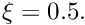 This default assignment may be overwritten by setting a pointer to a variable that specifies by using the function
which has a default value of 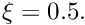 This default assignment may be overwritten by setting a pointer to a variable that specifies by using the function FSIWallElement::q_pt().
The class also overloads the SolidFiniteElement::fill_in_contribution_to_jacobian(...) function so that the derivatives of the residuals with respect to those unknowns that affect the fluid traction on the wall are included when computing the element's Jacobian matrix.
In the driver code, discussed below, we will discretise the wall with FSHermiteBeamElements, a class that is composed (by multiple inheritance) from the single-physics HermiteBeamElement and the FSIWallElement base class:
Obtaining the fluid traction from "adjacent" fluid elements: FSIFluidElements
Having provided a function that allows us to determine which fluid elements are located next to a given FSIWallElement, we have to define standard interfaces through which we can obtain the traction that the "adjacent" fluid element exerts onto the wall. Furthermore, we have to determine which unknowns affect the fluid traction to enable us to evaluate the derivatives of the wall residuals with respect to these unknowns. Interfaces for the relevant functions are provided in the base class FSIFluidElement, whose most important member function (for the purpose of the present discussion) is FSIFluidElement::get_load(...). The purpose of this function is to compute the traction exerted by the FSIFluidElement onto the adjacent FSIWallElement, given the outer unit vector onto the FSIFluidElement. The FSIFluidElement class has two further pure virtual member functions whose role is to determine the unknowns (e.g. velocity and pressure values) that affect the fluid traction. For newly developed fluid elements these functions have to implemented on a case-by-case basis. However, all existing fluid elements in oomph-lib are already derived from the FSIFluidElement class and therefore provide a suitable implementation of these functions. It is therefore not necessary to explicitly "upgrade" oomph-lib's fluid elements before using them in FSI computations.
Overview of the driver code
The driver code for the fully-coupled fluid-structure interaction problem is a straightforward combination of the two single-physics codes with a few trivial additional steps. The main steps in the problem setup are:
- Create the wall mesh, using
FSIHermiteBeamElementsinstead ofHermiteBeamElements. - NEW: Create a
GeomObjectrepresentation of the wall mesh, using theMeshAsGeomObjectclass. - Create the fluid mesh, using elements of type
MacroElementNodeUpdateElement<QCrouzeixRaviartElement<2>>instead ofQCrouzeixRaviartElement<2>. Use theMeshAsGeomObjectrepresentation of the elastic wall, created in the previous step to represent the curvilinear domain boundary. - Build a mesh of traction elements that apply the prescribed-traction boundary condition at the inflow. Add all three meshes (fluid, solid and traction mesh) to the
Problem'scollection of sub-meshes and build the global mesh. - Pass the relevant function pointers (for Reynolds number, external loads, etc) to the various elements and apply the boundary conditions.
- NEW: Call the function
FSI_functions::setup_fluid_load_info_for_solid_elements(...)to set up the lookup scheme that establishes which fluid elements affect the traction on the wall. - Set up the equation numbering scheme.
- Done! .
Most steps in this sequence are either identical to those in the corresponding single-physics codes, or require only trivial modifications. Each of the two new steps (2 and 6) can be implemented with a single line of code. Consequently, most of the driver code, discussed in detail below, contains verbatim copies of code segments from the respective single-physics codes.
Namespace for the global physical variables
The namespace for the "global" physical parameters contains the same fluid parameters as in the collapsible channel problem with prescribed wall motion: We define the Reynolds and Womersley numbers and the fluid pressure at the upstream end, and provide a function that specifies the applied traction at the inflow:
Next we define the wall parameters (wall thickness, prestress and external pressure) and assign default values. Note that the function that specifies the load on the wall contains only the load due to the external pressure – the additional load due to the fluid traction will be added automatically by the FSIWallElements, using the lookup scheme set up by the function FSI_functions::setup_fluid_load_info_for_solid_elements(...) discussed earlier.
Finally, we define the interaction parameter and give it a default value.
The undeformed wall
We represent the undeformed geometry of the elastic wall, defined by equation (5), as a GeomObject, specifying the 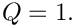-coordinate of its left end and its (constant) 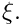-coordinate as arguments to the constructor:
The two versions of the position(...) function are straightforward:
Since the GeomObject is used to specify the undeformed shape of a HermiteBeamElement, the function GeomObject::d2position(...) must be implemented to define the beam's curvature in the undeformed configuration.
The private member data contains the two geometric parameters.
The driver code
As with most previous time-dependent codes, we use command line arguments to indicate if the code is run during oomph-lib's self-test procedures. If command line arguments are specified, we use a coarser discretisation and perform fewer timesteps. After storing the command line arguments, we choose the number of elements in the mesh, and set the lengths of the domain.
We assign values for the external pressure (on the wall stiffness scale) and for the upstream fluid pressure (on the fluid pressure scale). The latter is again chosen so that in the absence of any wall deformation, the applied pressure difference would drive steady Poiseuille flow through the channel.
We build the problem with 2D quadrilateral Crouzeix-Raviart elements, "upgraded" to MacroElementNodeUpdateElements. This ensures that the "shape
derivatives" (the derivatives of the fluid residuals with respect to the solid mechanics degrees of freedom that affect the nodal positions in the fluid elements), are incorporated into the fluid elements' Jacobian matrices.
We choose the timestepping parameters before assigning the initial conditions. (Preliminary computations showed that the system performs oscillations with approximately
unit period, so the chosen value for the timestep dt corresponds to a time-integration with about 40 timesteps per period.)
Next we specify the output directory, open a trace file and document the initial conditions
The timestepping loop is identical to that in the problem with prescribed wall motion:
The problem class
The problem class is very similar to that used for the problem with prescribed wall motion. We specify the type of the fluid element as a template parameter and pass the number of elements and the lengths of the domain to the constructor:
We provide access functions to the (pointers to) the fluid mesh,
and the wall mesh:
Unlike the problem with prescribed wall motion, the FSI problem does not have any time-dependent boundary conditions, therefore the pure virtual functions Problem::action_before_solve() and Problem::action_after_solve() can remain empty, and the function Problem::actions_before_implicit_timestep() is not needed.
However, since the wall displacement (which is determined as part of the solution!) affects the nodal positions in the fluid mesh via the MacroElement/ based node-update, the position of the fluid nodes must be updated whenever the Newton solver updates the unknowns. This is precisely what the function Domain -Problem::actions_before_newton_convergence_check() is for; see the discussion of oomph-lib's various "action" functions for more details.
The functions doc_solution(...) and set_initial_condition() do what they always do.
The private member function create_traction_elements(...) is used to attach the applied traction elements to the upstream end of the channel, exactly as in the problem with prescribed wall motion.
The private member data stores the problem parameters,
the pointers to the fluid mesh,
the surface mesh that contains the applied-traction elements,
and the wall mesh,
as well as pointers to various control nodes
The problem constructor
We copy the various mesh parameters to the Problem's private data
and increase the maximum value of the residual that is permitted during the Newton iteration to accommodate possible poor initial guesses for the solution.
We construct a BDF<2> - timestepper for the time-integration of the fluid equations and add it to the Problem's collection of timesteppers:
The wall mesh is built as in the corresponding single-physics beam problem: We create the GeomObject that describes the undeformed wall shape and construct the wall mesh, this time with FSIHermiteBeamElements:
We note that even though the same number of fluid and beam elements are used to discretise the common boundary, the discretisation of the two domains is not matching as the shape of the domain boundary is represented by piecewise cubic Hermite polynomials within the beam elements, and by piecewise quadratic Lagrange polynomials within the fluid elements. Mathematically, this does not cause any problems as both representations converge to the same boundary shape as the meshes are refined further and further. We stress that oomph-lib does not even require the number of elements along the interface to match; see Exercises .
The MacroElement/Domain - based fluid-mesh update requires the wall shape (which is now parametrised by the wall mesh's constituent elements) to be represented by single GeomObject. We create the required "compound" GeomObject using the MeshAsGeomObject class:
This "compound" GeomObject can now be used to build the fluid mesh, exactly as in
the corresponding single-physics fluids problem. (The MacroElementNodeUpdateCollapsibleChannelMesh is a trivial extension of the CollapsibleChannelMesh from which it is derived; see the discussion of the "toy" free-boundary Poisson problem for details.)
As in the fluids problem with prescribed wall motion we use a "boundary-layer squash function" to distribute the fluid elements non-uniformly across the channel so that more elements are located inside the thin Stokes layers that are likely to develop near the wall.
We create the sub-mesh that stores the applied traction elements and attach the elements to the upstream end of the channel. The three sub-meshes are then combined into the Problem's single global mesh.
We complete the build process for the fluid elements by passing the pointers to the relevant problem parameters to the elements,
then we apply the boundary conditions for the fluid velocities:
- both axial and transverse velocities are pinned along the bottom and the top boundaries (boundaries 0, 2, 3 and 4)
- the transverse velocity is pinned along the in- and outflow (boundaries 1 and 5).
The applied traction elements require a pointer to the prescribed traction function:
The wall elements require pointers to the various problem parameters and the pointer to the GeomObject that defines the beam's undeformed shape. Depending on the relative orientation of the fluid and solid meshes, the normal vector used by the FSIWallElement to determine the traction exerted by the adjacent FSIFluidElement may either point into or out of the fluid domain. By default, it is assumed that the normal points into the fluid – in this case the traction computed by the adjacent FSIFluidElement is added to the external load that acts on the FSIWallElement. Evaluating the direction of the normal (e.g by plotting the vector obtained from FSIHermiteBeamElement::get_normal(...) ) in the present problem shows that the normal to the wall elements actually points out of the fluid domain, therefore the fluid traction acts in the opposite direction to that assumed in the original formulation. This may be rectified by setting the boolean flag FSIHermiteBeamElement::normal_points_into_fluid() to false.
Both ends of the beam are pinned:
We choose two fluid control nodes in the middle of the inflow and outflow cross-sections to document the velocities, and choose a central node in the wall mesh to document its displacement.
Finally, we set up the remaining fluid-structure interaction: The fluid nodes that are located on the moving wall remain attached to material particles on the wall. The no-slip condition (4) therefore implies that the fluid velocity at each of these nodes must be equal to the nodes' velocity. Hence the fluid velocity must be updated whenever a node update function changes the nodal position. This is done most easily by means of the auxiliary node update function – a function that is executed automatically whenever a node's node_update() function is called. To achieve this we pass a function pointer to the FSI_functions::apply_no_slip_on_moving_wall() function to the nodes on the fluid mesh's boundary 3:
Next, the FSIHermiteBeamElements have to be "told" which fluid elements are located next to their Gauss points to allow them to work out the fluid traction. The required lookup tables are created by the function FSI_functions::setup_fluid_load_info_for_solid_elements(...):
Finally, we set up the equation numbering scheme.
Post processing
The function doc_solution(...) outputs the velocity and wall displacement fields and records the time-trace of the axial velocity at the control nodes and the position of the wall's midpoint. The function FSI_functions::doc_fsi(...) is a helper function that can be used to document/validate the various FSI lookup schemes; see Comments and Exercises for an illustration of their output.
Creation of the traction elements
This function is the same as the one used in the problem with prescribed wall motion.
Applying the initial conditions
This function is the same as the one used in the problem with prescribed wall motion.
Comments and Exercises
Comments
Variables that affect the fluid traction are not just velocities and pressures!
In the section Applying the fluid-traction to the wall elements: FSIWallElements we briefly discussed how the functionFSI_functions::setup_fluid_load_info_for_solid_elements(...)determines the variables that affect the fluid traction onto theFSIWallElements. For a Newtonian fluid, the components of the fluid traction vector (on the viscous scale) onto the wall is given by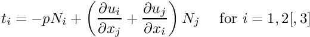
where 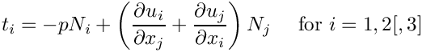 are the components of the normal to the fluid domain, pointing into the fluid. This equation shows that the fluid traction is primarily affected by the velocity and pressure degrees of freedom in the fluid elements that are "adjacent" to a given
FSIWallElement.
However, since the traction involves derivatives of the velocity, the traction is also affected by changes to the
geometry of the fluid element. Therefore, the list of variables that affect the fluid traction must (and indeed does) include all thoseDataobjects that are involved in the adjacent fluid elements' node update operations.
Here is an animation that illustrates these dependencies for a relatively coarse discretisation in which the collapsible section of the fluid mesh is discretised with 10 "vertical columns" ofQCrouzeixRaviartElement<2>elements, while the wall is discretised with 22FSIHermiteBeamElements, each of which contains 3 Gauss points. The animation shows the region of the fluid mesh close to the (strongly deformed) elastic wall. Each different frame illustrates the FSI lookup schemes for a different wall element.- The position of the wall Gauss points are displayed by "gradient" markers while the corresponding points in the adjacent fluid elements (i.e. the points at which the fluid traction is computed) are displayed by "delta" markers. Since the fluid and solid discretisations are non-matching the points do not coincide exactly though they will continue to approach each other under further mesh refinement.
- The coloured numbers indicate the number of values that affect the fluid traction on this
FSIWallElement:- The red numbers represent the number of nodal values at the nodes of the adjacent fluid element(s) that affect the traction: For a 2D Crouzeix-Raviart element, each fluid node stores two velocity degrees of freedom, both of which affect the traction.
- The blue numbers represent the number of internal
Datavalues stored in an adjacent fluid element that affect the traction: In a 2D Crouzeix-Raviart element, each element stores three pressure values in its internalDataand all three pressure values affect the traction. - Finally, the green numbers indicate the number of
Datavalues that are (potentially) involved in the node-update operation for the nodes in the adjacent fluid elements. Recall that during theMacroElement- based node-update we only refer to the wall via its representation as aWallAsGeomObject, i.e. as a "compound"GeomObject. The geometricDataof a compoundGeomObjectis given by the geometricDataof all its sub-objects. Therefore, the geometricDataof theWallAsGeomObjectincludes the positionalDataof allSolidNodesstored in this mesh. In anFSIHermiteBeamElement, eachSolidNodestores four values, representing the node's x- and y-positions and their derivatives with respect to the element's local coordinate.
- The red numbers represent the number of nodal values at the nodes of the adjacent fluid element(s) that affect the traction: For a 2D Crouzeix-Raviart element, each fluid node stores two velocity degrees of freedom, both of which affect the traction.
 Animation of the Data values that affect the fluid traction that the adjacent fluid elements exert onto the various FSIHermiteBeamElements in the wall mesh. (The fluid elements are 2D Crouzeix-Raviart elements.)
Animation of the Data values that affect the fluid traction that the adjacent fluid elements exert onto the various FSIHermiteBeamElements in the wall mesh. (The fluid elements are 2D Crouzeix-Raviart elements.)Here is the corresponding animation for a discretisation with 2D Taylor-Hood elements. These elements have no internal
Databut the pressure degrees of freedom are stored at the fluid element's corner nodes: Animation of the Data values that affect the fluid traction that the adjacent fluid elements exert onto the various FSIHermiteBeamElements in the wall mesh. (The fluid elements are 2D Taylor-Hood elements.)
Animation of the Data values that affect the fluid traction that the adjacent fluid elements exert onto the various FSIHermiteBeamElements in the wall mesh. (The fluid elements are 2D Taylor-Hood elements.)
Finally, here is an animation that shows the (wall) degrees of freedom that affect the node-update of a given fluid node. The red square marker shows the fluid node; the green numbers show the number of the degrees of freedom at the SolidNodes that are involved that fluid node's node update. Again it is clear that the MacroElement/Domain-based node update procedure in which the wall mesh is represented by a compound GeomObject does not result in a sparse node-update procedure: Each SolidNode in the wall mesh is assumed to affect the position of all fluid nodes.

- (In-)efficiency of the MacroElement-based node-update
The animations shown above illustrate very graphically that the implementation of the fluid-structure interaction viaMacroElement/Domain- based node updates does not lead to a particularly efficient algorithm. The current approach suffers from two main problems:- The fluid-node update is not sparse: Since we cannot distinguish between the various sub-objects in the "compound"
GeomObject, we can do no better than assuming the worst-case scenario, namely that all positional degrees of freedom of allSolidNodesin the wall mesh potentially affect the nodal position in the fluid elements adjacent to the wall. Consequently, eachFSIHermiteBeamElementin the wall mesh depends on all solid mechanics degrees of freedom in the wall mesh. As a result, the wall discretisation completely loses its sparsity! - When updating the position of the fluid nodes via the fluid element's
Domain/MacroElementrepresentation, we obtain the wall shape from theGeomObject::position(...)function of the "compound"GeomObject, using the wall's Lagrangian coordinate as the "compound" GeomObject'sintrinsic coordinate. As discussed in the section Representing the wall mesh as a GeomObject, this is a very costly operation, since we first have to determine which of the constituentFSIHermiteBeamElements"contains" the required Lagrangian coordinate, and then evaluate the Eulerian position of the relevant point in the element.
- The fluid-node update is not sparse: Since we cannot distinguish between the various sub-objects in the "compound"
Exercises
- Use the function
FSIHermiteBeamElement::get_normal(...)to plot the unit normal vector to the wall and thus confirm that the value forFSIHermiteBeamElement::normal_points_into_fluid()is correct. [Hint: Another way to sanity-check that the correct value for this flag has been set is to change the velocity boundary conditions at the upstream end to a pure Dirichlet condition by prescribing the axial velocity profile. With Dirichlet conditions everywhere, one fluid pressure degree of freedom, 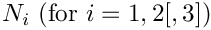 , say, can (indeed must!) then be assigned arbitrarily. Now set the inflow velocity to zero and increase the value of from zero, say. If the wall collapses inwards as is increased the direction of normal was chosen wrongly!] - In section Applying the fluid-traction to the wall elements: FSIWallElements we mentioned that the function
FSI_functions::setup_fluid_load_info_for_solid_elements(...)assumes that the fluid nodes on the FSI boundary store the boundary coordinate. Investigate what happens if this step is omitted, e.g. by commenting out the assignment of boundary coordinates withNode::set_coordinates_on_boundary(...)in collapsible_channel_mesh.template.cc. - In section The undeformed wall we mentioned that the function
GeomObject::d2position(...)must be implemented for allGeomObjectsthat specify the undeformed shape of a beam element. Check what happens if this function is not implemented, e.g. by
commenting out its definition in theUndeformedWallclass. - In section The problem constructor we commented that
oomph-libdoes not require the discretisations of the fluid and solid meshes to match along the common boundary. Confirm this, e.g., by increasing the number of elements in the wall mesh.
Source files for this tutorial
- The source files for this tutorial are located in the directory:
demo_drivers/interaction/fsi_collapsible_channel/ - The driver code is:
demo_drivers/interaction/fsi_collapsible_channel/fsi_collapsible_channel.cc
PDF file
A pdf version of this document is available.